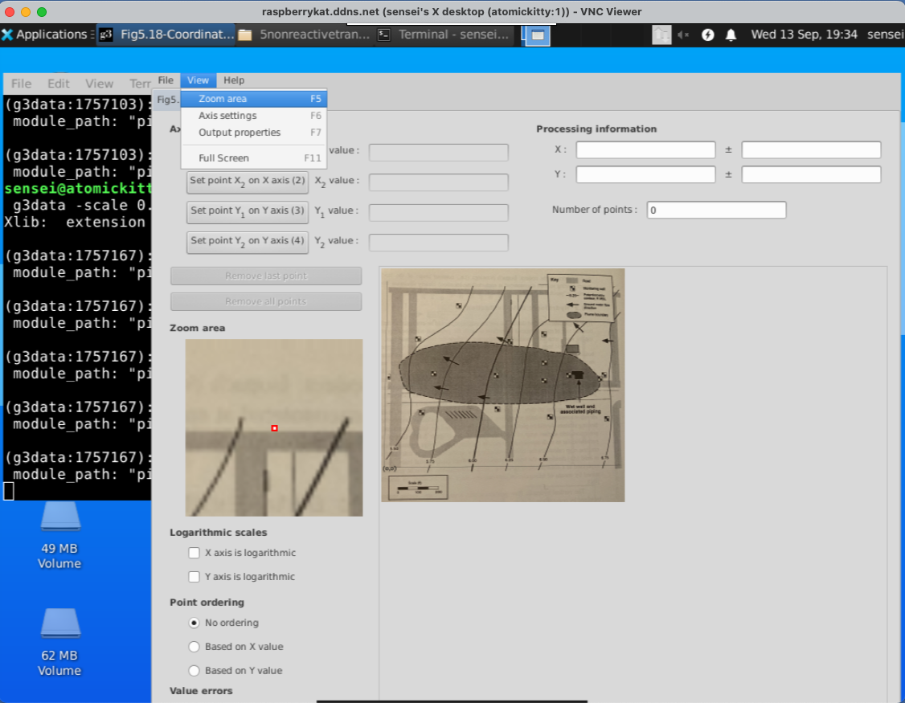
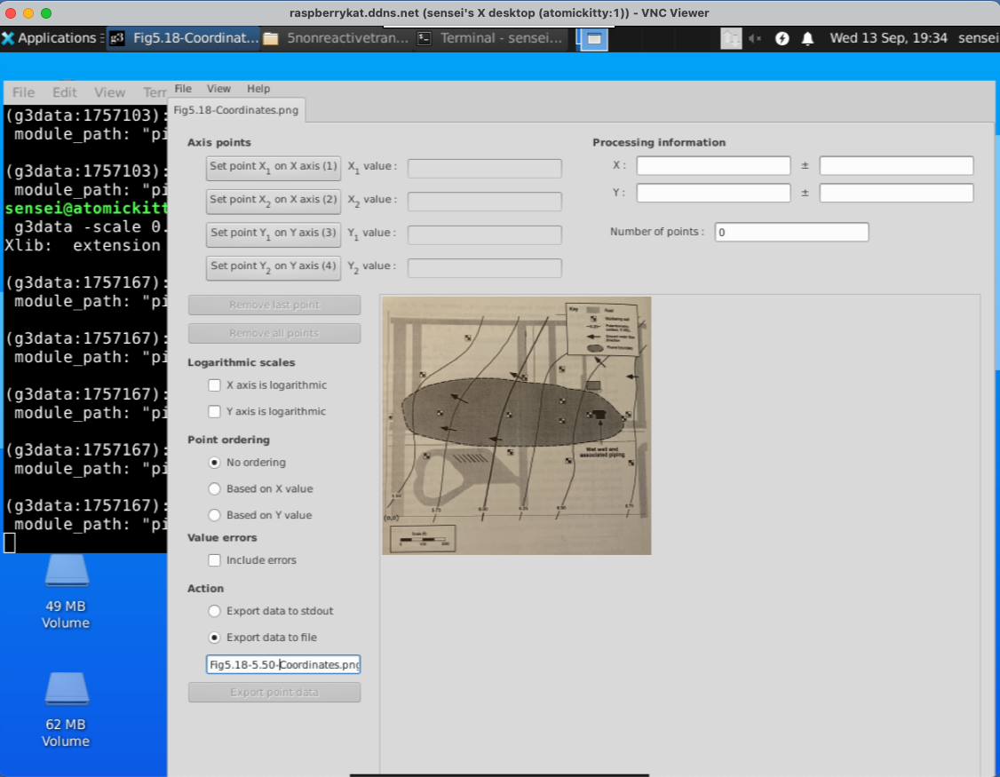
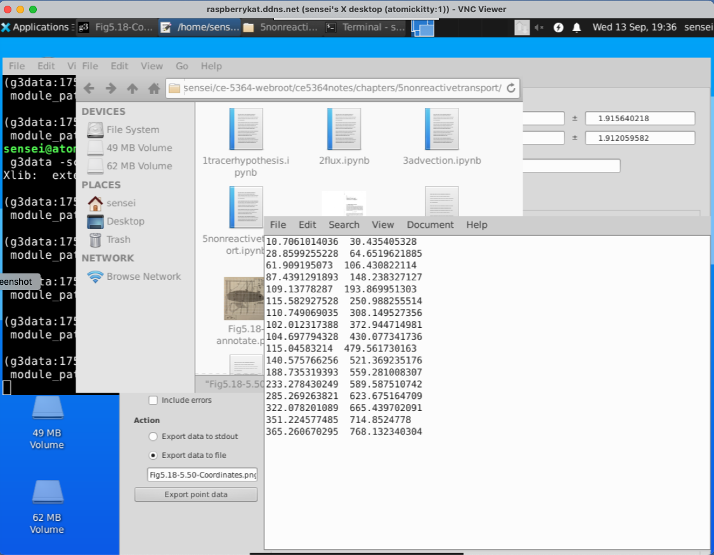

Modeling Advection¶
Modeling advective transport in groundwater is a critical component of hydrogeology and environmental science, as it allows us to understand and predict the movement of contaminants and the transport of solutes through subsurface aquifers. Advective transport refers to the bulk movement of water and the substances it carries, driven primarily by hydraulic gradients and pressure differences within the groundwater system. This process plays a fundamental role in determining the fate and transport of pollutants, nutrients, and other substances in the subsurface environment.
A variety of widely used methods and techniques are used; These methodologies are essential for comprehending the dynamics of groundwater flow and the transport of substances within aquifers. Two popular methods for modeling advective transport in groundwater are numerical modeling and analytical solutions.
Numerical modeling stands as a cornerstone in the field, with models like MODFLOW (MODular Finite-Difference Ground-Water Flow Model) at the forefront. Numerical models divide the subsurface into discrete grid cells, considering various factors such as hydraulic conductivity, boundary conditions, and aquifer heterogeneity. These models utilize numerical algorithms to simulate the behavior of groundwater flow and contaminant transport over time. By incorporating data from field investigations, they enable scientists to make accurate predictions regarding the movement and fate of contaminants in complex geological settings. Numerical models are exceptionally versatile and can handle a wide range of scenarios, making them an indispensable tool for hydrogeologists and environmental scientists.
On the other hand, analytical solutions offer a more simplified approach for specific scenarios. These solutions are often employed when dealing with idealized geometries and boundary conditions. For instance, the advection-dispersion equation, a fundamental equation in groundwater transport, can be solved analytically for simple scenarios. Analytical solutions provide quick insights into transport phenomena and are valuable for initial assessments and educational purposes. However, they may not capture the complexities of real-world aquifers as effectively as numerical models.
Methods¶
A reductionist point of view lets us categorize practical modeling methods into two categories: particle (parcel) tracking and eulerian finite- difference,element, or volume methods (marker-in-cell is a hybrid). The Eulerian methods almost always employ some kind of flux limiter to maintain proper mass balances, upwinding is one such approach. Particle tracking and upwind finite difference approaches are two distinct methods for modeling advective transport in groundwater, each with its own set of advantages and limitations. Let’s compare and contrast these approaches:
Particle Tracking:¶
Conceptual Approach: Particle tracking models simulate the movement of individual particles within the groundwater flow field. This approach provides a more intuitive understanding of how contaminants or solutes move through the subsurface.
Accuracy in Complex Flow: Particle tracking is well-suited for modeling complex groundwater flow scenarios, such as in fractured aquifers or regions with varying flow directions. It can accurately represent irregular flow patterns.
Limitations: However, particle tracking may become computationally intensive when modeling a large number of particles over extended periods, making it less practical for long-term simulations.
Adaptive Resolution: It allows for adaptive grid refinement, where particles can be concentrated in regions of interest, offering higher resolution where needed.
Lagrangian Approach: It follows the Lagrangian approach, where particles move with the flow, which can be advantageous for understanding transport phenomena from a particle’s perspective.
Upwind Finite Difference:¶
Grid-Based Approach: Upwind finite difference methods are grid-based, where the domain is divided into grid cells, and equations are solved at discrete locations within each cell.
Computational Efficiency: Upwind finite difference methods are computationally efficient for large-scale models and long-term simulations. They are widely used for regional-scale groundwater flow and transport modeling.
Stability: They are known for their numerical stability, which ensures that the solution remains accurate even when using relatively large time steps.
Accuracy in Uniform Flow: Upwind finite difference methods may perform very well in uniform flow conditions, but they can encounter challenges in accurately representing complex flow patterns, especially in situations where there are rapid changes in flow directions.
Eulerian Approach: These methods follow an Eulerian approach, where flow and transport equations are solved at fixed grid locations, making them less intuitive from a particle’s perspective.
In summary, the choice between particle tracking and upwind finite difference approaches for modeling advective transport in groundwater depends on the specific characteristics of the groundwater system and the research objectives:
Particle tracking is preferred for understanding transport at a detailed, particle-level scale and for modeling complex flow patterns.
Upwind finite difference methods are suitable for large-scale, long-term simulations where computational efficiency and stability are essential, especially in cases of relatively uniform flow.
Often, a combination of both methods may be employed in a modeling study to take advantage of their respective strengths, using particle tracking for detailed insights in specific areas and upwind finite difference methods for broader-scale simulations.
The remainder of this notebook presents simple examples of each method.
Note
While the methods in this notebook would be fine, practical “for money” modeling will usually employ specialized software; especially if lawyers will somehow get involved.
Modeling Advection by Particle Tracking¶
To build models, we simply apply the Reynolds Transport Theorem to the advective flux component something like:

Modeling Tools¶
1D Examples are in the textbook; 1D is not too difficult as the direction hence the path is known.
Higher spatial dimensions (2D, 3D) use either a particle tracking approach (DPRW, MOC, MT3D, …) or flux-limited Reynolds-averaged Navier-Stokes (FLUENT, SUTRA, HST3D, ….)
Particle Tracking¶
Later on we will use USGS-MOC, so will illustrate particle tracking.
Particle or front tracking is typically performed using special software.
It can be performed using a spreadsheet.
The spreadsheet exercise is useful to illustrate the principles involved in particle tracking calculations.
Particle tracking with reactions is very computationally intensive and is beyond practical application in a spreadsheet; such computations are used to design space shuttles, helicopters and other things where the knowledge gained justifies the costs
The first step is to compute the velocity field (if it is steady even better, if not then every time increment it is recomputed)
If analytical functions are available for the velocity field then tracking is relatively easy.
Usually the velocity field is determined numerically at discrete points in space, and this is the situation of interest.
The interpolation schemes in common use are simple; simple, simple-linear, and multi-linear schemes.
Only the simple-linear scheme preserves cell-by-cell mass balances.
The figure below illustrates simple linear interpolation.

Typical computational grid for heads.
Arrows are the interfacial fluxes.
The simple scheme assigns the top and left flux to \((x_1,y_1)\).
The simple scheme assgins the right and bottom flux to \((x_2,y_2)\).
The particle velocity is determined by position of the particle relative to the velocity grid.

Uses the same grid as the head scheme. Velocity is the distance weighted average of the cell that the particle occupies.

From the above figure, the particle’s velocities (x- and y- directions) are:
\(u_p = \frac{1-\delta x}{\Delta x}u(x_1,y_1)+\frac{\delta x}{\Delta x}u(x_2,y_2)\)
\(v_p = \frac{1-\delta y}{\Delta y}v(x_1,y_1)+\frac{\delta y}{\Delta y}v(x_2,y_2)\)
Multi-Linear Interpolation¶
Higher order schemes produce smoother velocity fields at the expense of cell mass balances and computational ease. The USGS-MOC model uses a bi-linear scheme where the velocities at the four corners of the occupied cell are used. When transient flow fields occur, averaging in time is also used. The differences in the schemes are hard to detect when the grid spacing is small and the flow field is smoothly varying.
Spreadsheet Approach¶
To illustrate particle tracking the simple velocity scheme is used.
Extension to higher order schemes is straight forward.
Illustrate with simple scheme. Consider:

Large rectangles represent the velocity grid.
Circles represent the geometric location where velocity is known.
Small rectangle represents the particle that we wish to track.
Cell Indexing

Each cell represents a grid location in the velocity field. Thus each cell has a unique row and column index.
Each cell centroid also has a unique geomteric (x,y) location.
The particle in the figure is located in cell named: Col_1,Row_2.
The cell is located at position: (X_1,Y_2).
The particle position is (XP,YP).
Locating the Particle
At the start of a time-step:
particle position is known.
cell positions are known.
cell that the particle occupies is unknown.
Construct a distance table
The distance from each cell to the particle is calculated and stored in a table.
Search the table,find the cell nearest the particle.
The cell coordinates of the smallest distance in the table is determined
Locating in Excel
The spreadsheet function that finds the value in an array (rectangular area of cells), given the position in the array to search is the function
INDEX(array,row_index,column_index)The spreadsheet function that can find the position in an array where a particular value appears is the function
MATCH(value,array,type)
INDEX Function
INDEX(array,row_index,column_index)array is the location of the rectangular area of cells to search (eg. A3:C6). row_index is number of rows down from the starting row to search. column_index is the number of columns across from the starting column to search.
MATCH Function
MATCH(value,array,type)value is the numerical value to search for in the array. array is the location of the rectangular area of cells to search (eg. A3:C6). type is the type of match to use. type=0 means exact matching.
Using the Functions
The
INDEXfunction allows us to select the correct values of velocity if we know which cell the particle resides in.The
MATCHfunction allows us to compare values in an array and determine the position in the array that these values are found.
Thus theMATCHfunction lets us search a distance table, find the cell center nearest the particle, and then use the index to find the correct velocity.
Moving the Particle
Once the cell containing the particle is identified, the particle is assigned the velocity values for that cell. The particle is then “moved” by the simple kinematic calculation:
\(x_p(t+\Delta t)=x_p(t)+u_p(t)\Delta t\)
\(y_p(t+\Delta t)=y_p(t)+v_p(t)\Delta t\)
Illustrative Example
An example with 3 particles is shown below - the spreadsheet is kind of big because iterative computations are intentionally avoided.

Closer view for particle 1:

Closer view for particle 2:

Closer view for particle 3:

Summary
Particle tracking is a tool to determine the position of a fluid particle in a flow field.
A two-step approach is required:
Determine particle velocity
Locate the particle relative to known velocity locations.
Assign the velocity to the particle based on an interpolation scheme.
Move the particle.
All particle tracking programs use some sort of this two-step logic.
Spreadsheets¶
Cleveland, T.G. (1997) Particle Tracking Spreadsheet (10X10) (Excel)
Cleveland, T.G. (1997) Particle Tracking Spreadsheet (20X20) (Excel)
Cleveland, T.G. (1997) Particle Tracking Spreadsheet (5X5 same as example above) (Excel)
Performing the calculations in a python script is illustrated in the next section.
Note
You will see that the python script is simpler to construct than the spreadsheet (in terms of weird functions), but takes a shit-ton more code!
Example of Particle Tracking¶
Here we illustrate using particle tracking to address the problem from the homework.
Problem 2 (Problem 2-8, pg. 578)¶
The figure below shows a piezometric map for a shallow sand aquifer. The hydraulic conductivtiy is estimated to be \(1.5 \times 10^{-2}~\frac{cm}{s}\), the saturated thickness is 40 feet, and the effective porosity is 0.3.

Determine:
Which well is expected to be the most contaminated.
The groundwater velocity and seepage velocity across the plume.
The duration that the source has been contaminating the aquifer (neglect dispersion, diffusiom, and adsorption).
The flow rate across the plume.
An explaination for contamination upgradient of the source zone.
Step 1. Need to Digitize the Head Map¶
Use G3DATA or something similar to digitize the head map.
Using G3DATA we will need a coordinate system, so thats superimposed on

Next you need to open an instance of G3DATA. If using Windows the system should give you a windows manager, if using linux you need an X-window desktop.
Open G3DATA¶
Observe that I get the RandR warning (Resize and rotate) - this is assocated with my VNC server window, and the software still is working. Given I am running on a Raspberry Pi over the internet, ill live with the warning.

Also notice in the program call the -scale 0.1 this is a trial-and-error to rescale the image so I can see what I am doing, so open and close a few times until you get the view window into a workable size.

Set View == Zoom¶
Next we will need to set the view window to Zoom area. This is needed to write the level set files that we are building.

Set Filename¶
Here we set the file name for each level set. We will digitize each contour line and save its coordinates to a file, then we conactenate these files after adding the Z coordinate into a single file for gridding and plotting.

Set XY Coordinates¶
Here we must set the X and Y coordinates of the lower left,lower right (X) and lower left upper left (Y) to establish how we will be measuring things.

Digitize the Contours¶
Now we digitize a contour line

when done, we write the points to a file. Here is what is in the tile.

Then clear the points (in the G3DATA program), change the file name and digitize the next line. Repeat until all the lines are complete.
Then open each file and add the Z-coordinate. Lastly join each file into a single file for further processing.
Here is what my version looks like, the file is Fig5.18-LevelSets.png.dat its an ASCII file that I can read and make a contour plot, but more importantly I can grid the data to estimate x- and y- components of velocity from the given value of hydraulic conductivity.
X-Easting Y-Northing Z-Elevation
-0.365791375238 0.00426936718372 5.5
7.44799110264 34.0524726574 5.5
30.6624750375 65.7872126049 5.5
...
many lines
...
353.704129652 725.957058705 5.5
186.509893725 0.312464310759 5.75
195.371098732 37.1933927273 5.75
202.181166327 65.9190293167 5.75
206.765265923 96.4487403766 5.75
...
many lines
...
486.889653936 722.268859129 5.75
362.749010841 -18.4586090188 6.0
367.376818083 9.58126046662 6.0
...
many lines
...
595.939191403 718.506746134 6.0
502.803399911 -17.6039350757 6.25
512.271308678 26.3822876764 6.25
520.432150683 61.4932965599 6.25
525.047470026 90.2445493523 6.25
...
many lines
...
708.769440297 624.373336948 6.25
637.755441575 -17.7565649526 6.50
649.674100524 11.6206838032 6.50
...
many lines
...
885.881149356 618.394355043 6.50
901.700715759 -11.9467567219 6.75
909.60191353 17.1217634194 6.75
...
many lines
...
976.769639356 628.357723872 6.75
Step 2 Check the Digitization Results¶
Here we will now produce a contour map from the digitized map, adjust sizes and overlay on the original map to get an idea of how good we did.
Also will use trial-and-error to find a useable hull within the contour plot where we can capture heads and use for a particle tracking effort - we have to find a rectangle with non-null interpolation values; easiest way (my opinion) is to try indices until can find a reasonable rectangle then sample from that rectangle. The process is documented below.
Note
The interpolation algorithm does not estimate vales outside the convex hull defined by the observation data. So the box below is by trial-and-error to stay within the convex hull; the interpolator in this region produces useable estimates for computing the heads and velocities from just the mapped information>
# CCMR from ENGR-1330:
# http://54.243.252.9/engr-1330-webroot/8-Labs/Lab07/Lab07.html
# https://clouds.eos.ubc.ca/~phil/docs/problem_solving/06-Plotting-with-Matplotlib/06.14-Contour-Plots.html
# https://docs.scipy.org/doc/scipy/reference/generated/scipy.interpolate.griddata.html
# https://stackoverflow.com/questions/332289/how-do-you-change-the-size-of-figures-drawn-with-matplotlib
# https://stackoverflow.com/questions/18730044/converting-two-lists-into-a-matrix
# https://stackoverflow.com/questions/3242382/interpolation-over-an-irregular-grid
# https://stackoverflow.com/questions/33919875/interpolate-irregular-3d-data-from-a-xyz-file-to-a-regular-grid
import pandas
my_xyz = pandas.read_csv('Fig5.18-LevelSets.png.dat',sep='\t') # read an ascii file already prepared, delimiter is tabs
#my_xyz = pandas.read_csv('XYZSomewhereUSA.txt',sep=' ') # read an ascii file already prepared, delimiter is tabs
my_xyz = pandas.DataFrame(my_xyz) # convert into a data frame
#print(my_xyz) #examine the dataframe
import numpy
import matplotlib.pyplot
from scipy.interpolate import griddata
# extract lists from the dataframe
coord_x = my_xyz['X-Easting'].values.tolist()
coord_y = my_xyz['Y-Northing'].values.tolist()
coord_z = my_xyz['Z-Elevation'].values.tolist()
coord_xy = numpy.column_stack((coord_x, coord_y))
# Set plotting range in original data units
lon = numpy.linspace(min(coord_x), max(coord_x), 100)
lat = numpy.linspace(min(coord_y), max(coord_y), 100)
X, Y = numpy.meshgrid(lon, lat)
# Grid the data; use cubic spline interpolation (other choices are nearest and linear)
Z = griddata(numpy.array(coord_xy), numpy.array(coord_z), (X, Y), method='cubic', fill_value = 'nan')
# Build the map
print("Indices of black box on overlay below:")
ixl = 9
ixh = 90
iyl = 27
iyh = 62
print("xyz lower left corner ",X[iyl][ixl],Y[iyl][ixl],Z[iyl][ixl])
print("xyz lower right corner",X[iyl][ixh],Y[iyl][ixh],Z[iyl][ixh])
print("xyz upper left corner ",X[iyh][ixl],Y[iyh][ixl],Z[iyh][ixl])
print("xyz upper right corner ",X[iyh][ixh],Y[iyh][ixh],Z[iyh][ixh])
xxl = X[iyl][ixl]
xxh = X[iyh][ixh]
yyl = Y[iyl][ixl]
yyh = Y[iyh][ixh]
flag=True
if flag:
matplotlib.pyplot.rcParams["figure.figsize"] = [10.00, 8.00]
matplotlib.pyplot.rcParams["figure.autolayout"] = True
im = matplotlib.pyplot.imread("Fig5.18-Coordinates.png") # base image
fig, ax = matplotlib.pyplot.subplots()
if flag:
im = ax.imshow(im, extent=[-25, 1000, -125, 800])# sets X and Y plot window of basemap
#fig.set_size_inches(14, 7)
levels=[5.50,5.75,6.00,6.25,6.50,6.75]
CS = ax.contour(X, Y, Z, levels, linewidths=3)
ax.clabel(CS, inline=2, fontsize=12)
ax.set_title('Contour Plot from Gridded Data File')
ax.set_xlim([0,1000])
ax.set_ylim([0,800])
ax.plot([xxl,xxh],[yyl,yyl],color="black")
ax.plot([xxl,xxh],[yyh,yyh],color="black")
ax.plot([xxl,xxl],[yyl,yyh],color="black")
ax.plot([xxh,xxh],[yyl,yyh],color="black");
Indices of black box on overlay below:
xyz lower left corner 90.9090909090909 200.0 5.478952367771485
xyz lower right corner 909.090909090909 200.0 6.722448985544166
xyz upper left corner 90.9090909090909 588.8888888888889 5.302942021834024
xyz upper right corner 909.090909090909 588.8888888888889 6.663235234576626
This is acceptable. Now we will extract velocities from the gridded data files - using the “box”. Recall to use the spreadsheet version of the particle tracker we need the \(U\) and \(V\) fields from the head distribution.
We will use the supplied hydraulic conductivity and porosity
\(K~\approx~ 1.5 \times 10^{-2}~\frac{cm}{s} \cdot \frac{1~in}{2.54~cm} \cdot \frac{1~ft}{12~in} \cdot \frac{86400~s}{1~day} = 42.52~\frac{ft}{day}\)
\(n~\approx~ 0.30 \)
And apply Darcy’s law as
\(\textbf{u(x,y)} = -\frac{K}{n}\cdot \frac{\Delta h}{\Delta x}\)
\(\textbf{v(x,y)} = -\frac{K}{n}\cdot \frac{\Delta h}{\Delta y}\)
Conductivity = 42.52 # feet/day
Porosity = 0.30 # voids/bulk
nrows = iyh - iyl
ncols = ixh - ixl
#Zero vectors for the velocity fields
U = [[0 for j in range(ncols)] for i in range(nrows)]
V = [[0 for j in range(ncols)] for i in range(nrows)]
#Zero vectors for realinged mesh grid
XG = [[0 for j in range(ncols)] for i in range(nrows)]
YG = [[0 for j in range(ncols)] for i in range(nrows)]
for j in range(ncols):
for i in range(nrows): #range(nrows)
U[i][j] = -1.0*(Conductivity/Porosity)*(Z[iyl+i][ixl+j]-Z[iyl+i][ixl+j-1])/(X[iyl+i][ixl+j]-X[iyl+i][ixl+j-1]) #- K dh/dx
V[i][j] = -1.0*(Conductivity/Porosity)*(Z[iyl+i][ixl+j]-Z[iyl+i-1][ixl+j])/(Y[iyl+i][ixl+j]-Y[iyl+i-1][ixl+j]) #- K dh/dy
XG[i][j] = X[iyl+i][ixl+j]
YG[i][j] = Y[iyl+i][ixl+j]
Suppose we want a plot of the vector field just to check our work, a nice tool is quiver and/or streamplot which are demonstrated below
# convert to numpy arrays
UU = numpy.asarray(U)
VV = numpy.asarray(V)
XX = numpy.asarray(XG)
YY = numpy.asarray(YG)
UU[30][30]
-0.22504528917472658
Now a cool “quiver” plot
if flag:
matplotlib.pyplot.rcParams["figure.figsize"] = [10.00, 8.00]
matplotlib.pyplot.rcParams["figure.autolayout"] = True
im = matplotlib.pyplot.imread("Fig5.18-Coordinates.png") # base image
fig, ax = matplotlib.pyplot.subplots()
if flag:
im = ax.imshow(im, extent=[-25, 1000, -125, 800])# sets X and Y plot window of basemap
#fig.set_size_inches(14, 7)
levels=[5.50,5.75,6.00,6.25,6.50,6.75]
CS = ax.quiver(XX[::6, ::6], YY[::6, ::6], UU[::6, ::6], VV[::6, ::6], units='width')
#ax.clabel(CS, inline=2, fontsize=12)
ax.set_title('Vector Plot from Gridded Data File')
ax.set_xlim([0,1000])
ax.set_ylim([0,800]);
ax.plot([xxl,xxh],[yyl,yyl],color="black")
ax.plot([xxl,xxh],[yyh,yyh],color="black")
ax.plot([xxl,xxl],[yyl,yyh],color="black")
ax.plot([xxh,xxh],[yyl,yyh],color="black");
#matplotlib.pyplot.quiver(XX[::6, ::6], YY[::6, ::6], UU[::6, ::6], VV[::6, ::6], units='width')
#matplotlib.pyplot.streamplot(XX, YY, UU, VV, density=0.5, linewidth=2, color=None)
if flag:
matplotlib.pyplot.rcParams["figure.figsize"] = [10.00, 8.00]
matplotlib.pyplot.rcParams["figure.autolayout"] = True
im = matplotlib.pyplot.imread("Fig5.18-Coordinates.png") # base image
fig, ax = matplotlib.pyplot.subplots()
if flag:
im = ax.imshow(im, extent=[0, 1000, -125, 800])# sets X and Y plot window of basemap
#fig.set_size_inches(14, 7)
levels=[5.50,5.75,6.00,6.25,6.50,6.75]
CS = ax.streamplot(XX, YY, UU, VV, density=0.5, linewidth=1, color=None, arrowsize=3)
#ax.clabel(CS, inline=2, fontsize=12)
ax.set_title('Vector Plot from Gridded Data File')
ax.set_xlim([0,1000])
ax.set_ylim([0,800]);
ax.plot([xxl,xxh],[yyl,yyl],color="black")
ax.plot([xxl,xxh],[yyh,yyh],color="black")
ax.plot([xxl,xxl],[yyl,yyh],color="black")
ax.plot([xxh,xxh],[yyl,yyh],color="black");

Now we can implement a particle tracking script. Using the spreadsheet as a guide we can write it in python, and access the cool graphics.
Here is the basic script, one simply has to wrap it into a time-stepping loop to produce a trajectory. Multiple particles can be managed
# U array x-velocity at XG,YG
# V array y-velocity at XG,YG
# XG array X-value of cell center
# YG array Y-value of cell center
# XP X-value of particle position
# YP Y-value of particle position
# UP x-velocity of particle
# VP y-velocity of particle
# TX x-component particle trajectory
# TY y-component particle trajectory
import math
verbose=False
terse=False
deltaT = 100
etime = 0
numTime = 42
XP = []
YP = []
UP = []
VP = []
TX = [] #trajectory vector
TY = []
np = 1 # Total particles
XP.append(900)
YP.append(290)
UP.append(0)
VP.append(0)
ip=np-1
print(" Initial Particle Position",round(XP[ip],2),round(YP[ip],2),round(UP[ip],2),round(VP[ip],2),round(etime,2))
# move particles this time step
for it in range(numTime):
for ip in range(np):
# Build Particle Distance Table
dist = []
index = []
count = 0
for j in range(ncols):
for i in range(nrows): #range(nrows)
dist.append(math.sqrt((XX[i][j]-XP[ip])**2 + (YY[i][j]-YP[ip])**2))
index.append([count,i,j]) # use to find i,j for a given index
count = count +1
# find closest cell
for i in range(count):
if dist[i] <= min(dist):
#print(index[i],dist[i])
ixx=index[i][1]
jyy=index[i][2]
# use nearest cell assignment - aka simple scheme
UP[ip] = UU[ixx][jyy]
VP[ip] = VV[ixx][jyy]
if verbose: print("Particle Position and Velocities Before Move",round(XP[ip],2),round(YP[ip],2),round(UP[ip],2),round(VP[ip],2),round(etime,2))
break #exits the loop - we stop at the first nearest cell encountered
# move the particle
XP[ip]=XP[ip]+UP[ip]*deltaT
YP[ip]=YP[ip]+VP[ip]*deltaT
etime=etime+deltaT
if terse: print(" Particle Position and Velocities After Move",round(XP[ip],2),round(YP[ip],2),round(UP[ip],2),round(VP[ip],2),round(etime,2))
TX.append([ip,XP[ip],etime])
TY.append([ip,YP[ip],etime])
Initial Particle Position 900 290 0 0 0
if flag:
matplotlib.pyplot.rcParams["figure.figsize"] = [10.00, 8.00]
matplotlib.pyplot.rcParams["figure.autolayout"] = True
im = matplotlib.pyplot.imread("Fig5.18-Coordinates.png") # base image
fig, ax = matplotlib.pyplot.subplots()
if flag:
im = ax.imshow(im, extent=[0, 1000, -125, 800])# sets X and Y plot window of basemap
#fig.set_size_inches(14, 7)
levels=[5.50,5.75,6.00,6.25,6.50,6.75]
CS = ax.streamplot(XX, YY, UU, VV, density=0.5, linewidth=1, color=None, arrowsize=3)
#ax.clabel(CS, inline=2, fontsize=12)
ax.set_title('Vector Plot from Gridded Data File\n' +\
'Each Marker is ' + str(deltaT) + ' days\n' +\
'Total Time is ' + str(etime) + ' days')
ax.set_xlim([0,1000])
ax.set_ylim([0,800]);
ax.plot([xxl,xxh],[yyl,yyl],color="black")
ax.plot([xxl,xxh],[yyh,yyh],color="black")
ax.plot([xxl,xxl],[yyl,yyh],color="black")
ax.plot([xxh,xxh],[yyl,yyh],color="black")
xtrajectory = [sublist[1] for sublist in TX]
ytrajectory = [sublist[1] for sublist in TY]
ax.plot(xtrajectory[0],ytrajectory[0],marker="o",color="blue",markersize=24)
ax.plot(xtrajectory,ytrajectory,marker="o",color="red")
;
''

(43/.3)*(1.25/700)
0.255952380952381
700/.25
2800.0